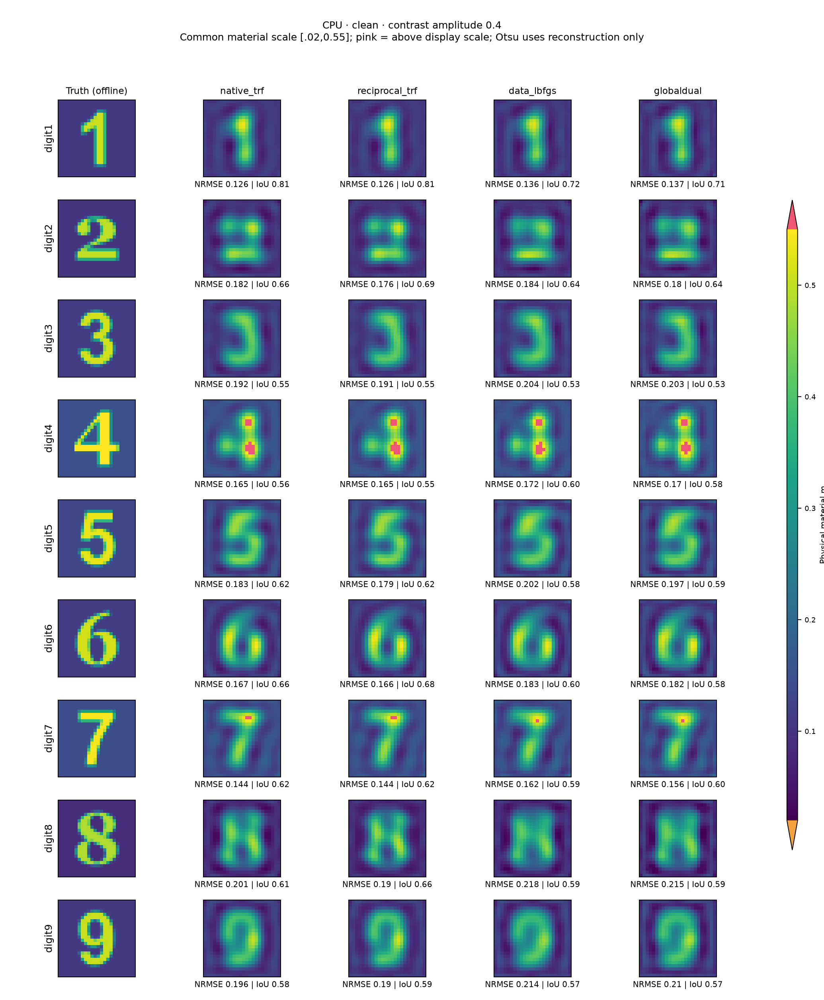
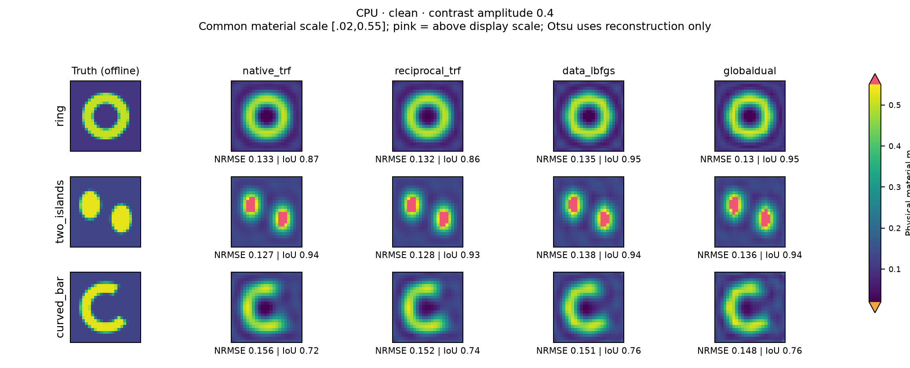
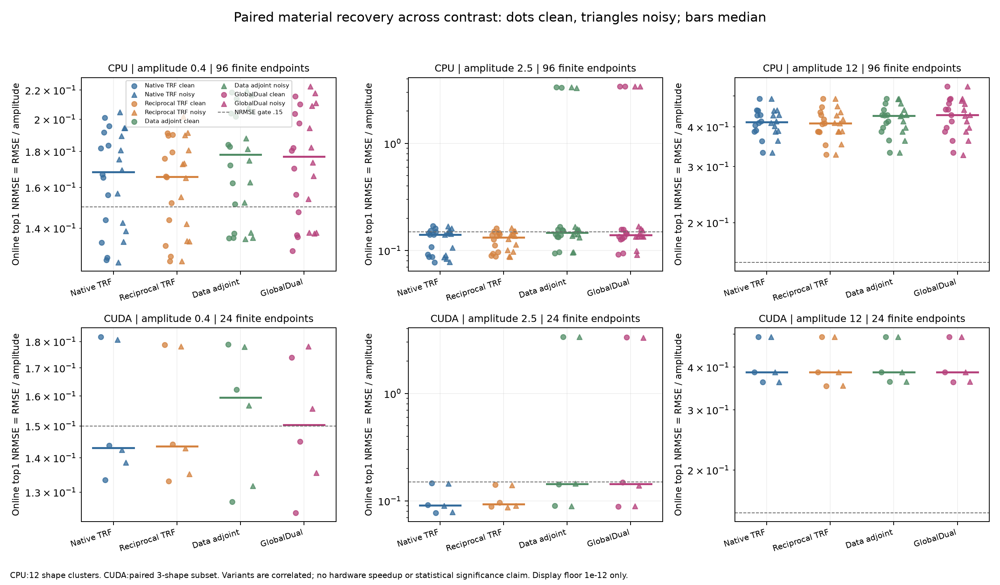
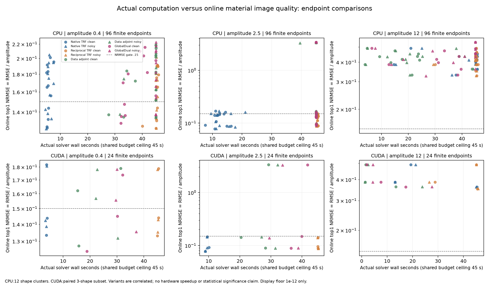
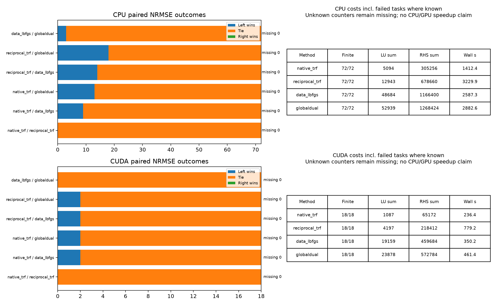
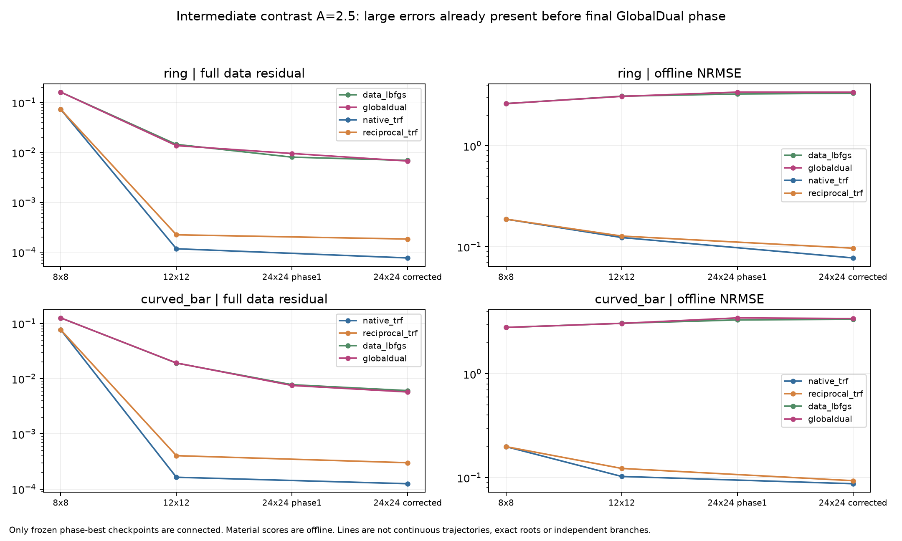

本轮用i9的四个P核完成288项反演，并在4060完成72项配对反演。低、中材料增量下，成熟Native Full-J能正常成像且明显更快。按生成前声明的NRMSE实际差异阈值，CPU的72份配对观测中GlobalDual对三个对照均无胜出；与匹配data-L-BFGS为69平3负，与Native为59平13负。不过，低幅度弯条与中幅度有噪数字8存在真实的联合门和细节收益，不能把它们抹掉。
本轮以相同形状、相同背景和配对噪声，改变笔画材料增量 A=0.4、2.5、12。CPU 覆盖数字 1–9、环、双岛、弯条，共 72 份观测；CUDA 的预定 18 份子集来自相同的数字 2、7、环。72 个观测属于 12 个形状簇，GPU 不增加独立对象数。
全部 576 个实材料未知，统一初值 0.1、box [0.02,20]；12 源×48 复接收，k=2π，保留完整多次散射。8→12→24 只改变材料参数化，所有阶段都用 576 阶物理系统。
九数字与三种非数字形状：完整保留成功和失败
每个幅度层内共用物理材料色阶，所有算法相同。粉色表示超过该显示上限，完整合法材料 box 仍到 20。NRMSE=材料 RMSE/A；IoU 使用重建自身的 Otsu 阈值。图中的 GT 只在预测关闭后用于评分。


按幅度、噪声、算法分开的结果
每个方法上限 45 秒、2000 次完整 LU、60000 个完整系统复 RHS。共同正则与多尺度安排固定。实际消耗和停止原因保留；预算耗尽的有限图像不等于收敛。数据门、材料门和联合门分别计数。
i9 P 核：12 个配对形状
| A | 噪声 | 方法 | 有限/计划 | NRMSE 均值 | IoU 均值 | 数据门 | 材料门 | 联合门 | 墙钟均值(s) |
|---|---|---|---|---|---|---|---|---|---|
| 0.4 | clean | native_trf | 12/12 | 0.1644 | 0.6832 | 12/12 | 3/12 | 3/12 | 5.659 |
| 0.4 | clean | reciprocal_trf | 12/12 | 0.1615 | 0.6917 | 12/12 | 3/12 | 3/12 | 45 |
| 0.4 | clean | data_lbfgs | 12/12 | 0.1749 | 0.6716 | 12/12 | 3/12 | 3/12 | 41.07 |
| 0.4 | clean | globaldual | 12/12 | 0.1721 | 0.6697 | 12/12 | 4/12 | 4/12 | 37.67 |
| 0.4 | noisy | native_trf | 12/12 | 0.1671 | 0.692 | 12/12 | 3/12 | 3/12 | 5.903 |
| 0.4 | noisy | reciprocal_trf | 12/12 | 0.1638 | 0.6949 | 12/12 | 3/12 | 3/12 | 45.32 |
| 0.4 | noisy | data_lbfgs | 12/12 | 0.1764 | 0.6722 | 12/12 | 3/12 | 3/12 | 42.95 |
| 0.4 | noisy | globaldual | 12/12 | 0.1787 | 0.6676 | 12/12 | 3/12 | 3/12 | 45.03 |
| 2.5 | clean | native_trf | 12/12 | 0.1261 | 0.7694 | 12/12 | 9/12 | 9/12 | 12.31 |
| 2.5 | clean | reciprocal_trf | 12/12 | 0.1238 | 0.7916 | 12/12 | 10/12 | 10/12 | 45.38 |
| 2.5 | clean | data_lbfgs | 12/12 | 0.6698 | 0.7198 | 10/12 | 6/12 | 6/12 | 45.02 |
| 2.5 | clean | globaldual | 12/12 | 0.6765 | 0.7299 | 10/12 | 7/12 | 7/12 | 45.02 |
| 2.5 | noisy | native_trf | 12/12 | 0.1257 | 0.7748 | 12/12 | 8/12 | 8/12 | 13.5 |
| 2.5 | noisy | reciprocal_trf | 12/12 | 0.1252 | 0.7948 | 12/12 | 9/12 | 9/12 | 45.35 |
| 2.5 | noisy | data_lbfgs | 12/12 | 0.6685 | 0.7253 | 10/12 | 6/12 | 6/12 | 44.57 |
| 2.5 | noisy | globaldual | 12/12 | 0.6794 | 0.7258 | 10/12 | 7/12 | 7/12 | 45.02 |
| 12 | clean | native_trf | 12/12 | 0.4138 | 0.03236 | 0/12 | 0/12 | 0/12 | 40.18 |
| 12 | clean | reciprocal_trf | 12/12 | 0.4094 | 0.02883 | 0/12 | 0/12 | 0/12 | 44.09 |
| 12 | clean | data_lbfgs | 12/12 | 0.4192 | 0.0286 | 0/12 | 0/12 | 0/12 | 19.96 |
| 12 | clean | globaldual | 12/12 | 0.4357 | 0.04755 | 0/12 | 0/12 | 0/12 | 34.3 |
| 12 | noisy | native_trf | 12/12 | 0.4136 | 0.03232 | 0/12 | 0/12 | 0/12 | 40.16 |
| 12 | noisy | reciprocal_trf | 12/12 | 0.4101 | 0.02729 | 0/12 | 0/12 | 0/12 | 44.03 |
| 12 | noisy | data_lbfgs | 12/12 | 0.4255 | 0.02989 | 0/12 | 0/12 | 0/12 | 22.04 |
| 12 | noisy | globaldual | 12/12 | 0.4329 | 0.04282 | 0/12 | 0/12 | 0/12 | 33.17 |
4060：预定三形状配对子集（完成状态见表）
| A | 噪声 | 方法 | 有限/计划 | NRMSE 均值 | IoU 均值 | 数据门 | 材料门 | 联合门 | 墙钟均值(s) |
|---|---|---|---|---|---|---|---|---|---|
| 0.4 | clean | native_trf | 3/3 | 0.153 | 0.718 | 3/3 | 1/3 | 1/3 | 3.885 |
| 0.4 | clean | reciprocal_trf | 3/3 | 0.152 | 0.7191 | 3/3 | 1/3 | 1/3 | 45.3 |
| 0.4 | clean | data_lbfgs | 3/3 | 0.1562 | 0.7375 | 3/3 | 1/3 | 1/3 | 20.85 |
| 0.4 | clean | globaldual | 3/3 | 0.1477 | 0.7483 | 3/3 | 1/3 | 1/3 | 27.03 |
| 0.4 | noisy | native_trf | 3/3 | 0.1539 | 0.7482 | 3/3 | 1/3 | 1/3 | 3.732 |
| 0.4 | noisy | reciprocal_trf | 3/3 | 0.152 | 0.7464 | 3/3 | 1/3 | 1/3 | 45.18 |
| 0.4 | noisy | data_lbfgs | 3/3 | 0.1555 | 0.7323 | 3/3 | 1/3 | 1/3 | 25.04 |
| 0.4 | noisy | globaldual | 3/3 | 0.1565 | 0.7274 | 3/3 | 1/3 | 1/3 | 32.27 |
| 2.5 | clean | native_trf | 3/3 | 0.1051 | 0.8312 | 3/3 | 3/3 | 3/3 | 9.514 |
| 2.5 | clean | reciprocal_trf | 3/3 | 0.1086 | 0.8372 | 3/3 | 3/3 | 3/3 | 45.13 |
| 2.5 | clean | data_lbfgs | 3/3 | 1.2 | 0.7344 | 2/3 | 2/3 | 2/3 | 25.97 |
| 2.5 | clean | globaldual | 3/3 | 1.186 | 0.7341 | 2/3 | 2/3 | 2/3 | 39.4 |
| 2.5 | noisy | native_trf | 3/3 | 0.1046 | 0.8334 | 3/3 | 3/3 | 3/3 | 9.287 |
| 2.5 | noisy | reciprocal_trf | 3/3 | 0.1058 | 0.8379 | 3/3 | 3/3 | 3/3 | 45.17 |
| 2.5 | noisy | data_lbfgs | 3/3 | 1.194 | 0.7134 | 2/3 | 2/3 | 2/3 | 30.21 |
| 2.5 | noisy | globaldual | 3/3 | 1.181 | 0.7334 | 2/3 | 2/3 | 2/3 | 34.02 |
| 12 | clean | native_trf | 3/3 | 0.4131 | 0.01572 | 0/3 | 0/3 | 0/3 | 25.9 |
| 12 | clean | reciprocal_trf | 3/3 | 0.41 | 0.01511 | 0/3 | 0/3 | 0/3 | 39.8 |
| 12 | clean | data_lbfgs | 3/3 | 0.4133 | 0.01572 | 0/3 | 0/3 | 0/3 | 5.445 |
| 12 | clean | globaldual | 3/3 | 0.413 | 0.01556 | 0/3 | 0/3 | 0/3 | 8.954 |
| 12 | noisy | native_trf | 3/3 | 0.413 | 0.01556 | 0/3 | 0/3 | 0/3 | 26.47 |
| 12 | noisy | reciprocal_trf | 3/3 | 0.4101 | 0.0154 | 0/3 | 0/3 | 0/3 | 39.14 |
| 12 | noisy | data_lbfgs | 3/3 | 0.4133 | 0.01572 | 0/3 | 0/3 | 0/3 | 9.21 |
| 12 | noisy | globaldual | 3/3 | 0.4133 | 0.01572 | 0/3 | 0/3 | 0/3 | 12.12 |

GlobalDual 的增量与真实费用
直接比较 GlobalDual 与匹配的 data-L-BFGS，才能区分材料相关 Gram 目标与普通伴随优化的贡献。仅比 Full-J 少了接收端 RHS，不足以证明 GlobalDual 有额外收益。


低幅度并不自动让 GlobalDual 更优。在稳定的小扰动区域，它趋于固定的源空间加权残差；权重改变优化曲率，不增加测量信息。根附近、无正则且噪声模型正确时，普通最小二乘还有标准局部线性无偏方差最优性。GlobalDual 的价值若存在，必须来自本批实际有限预算的候选路径或条件改善，而不能从 Gram 公式直接推出。
本批A=0.4时，Born/完整响应差仍约21%–29%；它是低材料增量层，并非认证Born区。中幅度环与弯条的大误差在共用Data粗层阶段已出现，不能单独归罪最后的Gram阶段。

这是12个形状簇及GPU三形状配对子集的有限结果。低材料增量并非认证弱散射；共同正则和归一化也影响跨幅度表现。没有固定Gram消融、额外频率或独立物理离散化，没有全局唯一、全根枚举或概率后验主张。
全部证据与复现入口
- 中文完整报告 · 原始文件
- 低幅度与 Gram 几何 · 原始文件
- 四种算法 · 原始文件
- 盲测与归因 · 原始文件
- 材料生成 · 原始文件
- 复现命令 · 原始文件
- 独立科学审查 · 原始文件
- 逐案例结果 · 原始文件
- 成本总账 · 原始文件
- 分层配对结果 · 原始文件
在线 top1 由原始完整观测目标与共同通用正则选择。best@K 只作离线 oracle 指标。当前保存的是有限优化阶段候选；没有后验概率、概率解集或独立根分支覆盖的主张。